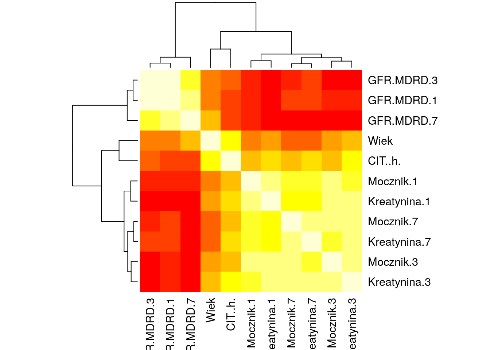

R Zadanie 4.1
Dla pary zmiennych cisnienie.skurczowe i cisnienie.rozkurczowe ze zbioru danych daneSoc wyznacz histogram dwuwymiarowy. Aby poprawić czytelność wybierz odpowiednią liczbę klas.
R code
##
## ----------------------------
## 2-D Histogram Object
## ----------------------------
##
## Call: hist2d(x = cisnienie.skurczowe, y = cisnienie.rozkurczowe, nbins = 15)
##
## Number of data points: 204
## Number of grid bins: 15 x 15
## X range: ( 93 , 178 )
## Y range: ( 57 , 107 )Python code
import pandas as pd
import matplotlib.pyplot as plt
daneSoc = pd.read_csv("http://www.biecek.pl/R/dane/daneSoc.csv", sep=";")
daneSoc = daneSoc.rename(columns=lambda x: x.replace(' ', '_'))
plt.figure(figsize=(6,4))
plt.hist2d(daneSoc['cisnienie_skurczowe'],daneSoc['cisnienie_rozkurczowe'], bins=(15, 15))
plt.tight_layout()
plt.savefig('R04_1.png')Wykresy.
R Zadanie 4.2
Dla pary zmiennych Nowotwor i Wiek ze zbioru danych daneO wyznacz wykres słonecznikowy.
R code
## The following objects are masked from daneO (pos = 10):
##
## Niepowodzenia, noweVEGF, Nowotwor, Okres.bez.wznowy,
## Receptory.estrogenowe, Receptory.progesteronowe, Rozmiar.guza,
## VEGF, Wezly.chlonne, WiekR Zadanie 4.3
Narysuj macierz wykresów rozrzutu dla zbioru danych mieszkania.
Użyj kilku poznanych funkcji. Który wykres jest najbardziej czytelny?
RR Zadanie 4.4
Dla zmiennych cisnienie.skurczowe i cisnienie.rozkurczowe ze zbioru danych daneSoc wyznacz dwuwymiarową gęstość i narysuj wykres konturowy.
R code
##
## Attaching package: 'ks'## The following object is masked from 'package:sm':
##
## binningdanetmp = daneSoc[, c(6,7)]
mcov = Hscv(danetmp)
gest2d = kde(danetmp, H=mcov)
plot(gest2d, cont=c(5,25,50,75,95))
Python code
import pandas as pd
import matplotlib.pyplot as plt
from scipy import *
import scipy.stats as stats
daneSoc = pd.read_csv("http://www.biecek.pl/R/dane/daneSoc.csv", sep=";")
daneSoc = daneSoc.rename(columns=lambda x: x.replace(' ', '_'))
data = vstack([daneSoc['cisnienie_skurczowe'],daneSoc['cisnienie_rozkurczowe']])
kde = stats.kde.gaussian_kde(data)
xgrid = linspace(daneSoc['cisnienie_skurczowe'].min(),daneSoc['cisnienie_skurczowe'].max(),100)
ygrid = linspace(daneSoc['cisnienie_rozkurczowe'].min(),daneSoc['cisnienie_rozkurczowe'].max(),100)
Xgrid, Ygrid = meshgrid(xgrid,ygrid)
Z = kde.evaluate(vstack([Xgrid.ravel(),Ygrid.ravel()]))
plt.figure(figsize=(6,4))
contours = plt.contour(Z.reshape(Xgrid.shape))
plt.clabel(contours,inline=True,fontsize=8,fmt='%.5f')
plt.xlabel("cisnienie_skurczowe"); plt.ylabel("cisnienie_rozkurczowe")
plt.tight_layout()
plt.savefig('R04_4.png')Wykresy.
R Zadanie 4.5
Odczytaj ramkę danych z zadania 1.13. Następnie wyznacz macierz korelacji pomiędzy zmiennymi ilościowymi z tego zbioru danych. Przedstaw ją z użyciem wykresu mapy ciepła i wykresu plotcorr().
R code

Python code
import pandas as pd
from biokit import *
import matplotlib.pyplot as plt
daneBT = pd.read_csv("http://www.biecek.pl/R/dane/daneBioTech.csv",sep=';',decimal=',', header=0, encoding='iso8859_2')
daneBT = daneBT.rename(columns=lambda x: x.replace(' ', '_'))
df = daneBT.iloc[:,[0,3,4,5,6,7,8,9,10,11,12]]
plt.figure(figsize=(6,4))
c = corrplot.Corrplot(df)
c.plot(colorbar=False)
plt.tight_layout()
plt.savefig('R04_5a.png')
corr = df.corr()
fig = plt.figure(figsize=(16,8))
h = Heatmap(corr)
layout = h.plot()
plt.savefig('R04_5b.png')## Computing correlationWykresy.
Wykresy.
R Zadanie 4.6
W kolumnach 4, 5 i 6 w zbiorze danych z zadania 1.13 znajdują się poziomy zmiennej Kreatynina w trzech różnych chwilach czasowych. Używając funkcji matplot() narysuj zmiany tych zmiennych dla pierwszych 5 pacjentów.
Python code
import pandas as pd
import matplotlib.pyplot as plt
daneBT = pd.read_csv("http://www.biecek.pl/R/dane/daneBioTech.csv",sep=';',decimal=',', header=0, encoding='iso8859_2')
daneBT = daneBT.rename(columns=lambda x: x.replace(' ', '_'))
plt.figure(figsize=(6,4))
plt.plot([1,3,7],daneBT.iloc[[0,1,2,3,4],[3,4,5]].T)
plt.tight_layout()
plt.savefig('R04_6.png')Wykresy.
RR Zadanie 4.7
Napisz funkcję, która za argumenty przyjmie dwa wektory liczb o równej długości. Następnie narysuje na jednym wykresie oba wektory (na osi OX będą kolejne liczby naturalne), każdy z własną osią OY (jedna oś narysowana powinna być po lewej stronie, druga po prawej). Osie, podobnie jak wykresy powinny być rysowane różnymi kolorami. Patrz przykład na rysunku 4.98.
R code
dwaWykresy <- function(x1, x2, col1="black", col2="red" , ...) {
x = 1:length(x1)
plot(x1, type="l", col=col1, ...)
szerokosc = diff(range(x2))
par(usr=c(0,length(x2),min(x2)-0.04*szerokosc,min(x2)+1.04*szerokosc))
lines(x2, col=col2, ...)
axis(side=4)
}
x0 = rnorm(500)
x1 = cumsum(x0)
x2 = cumsum(rnorm(500)-x0/4)*100
dwaWykresy(x1,x2, lwd=2)Python code
import matplotlib.pyplot as plt
import numpy as np
import scipy.stats as stats
def dwaWykresy(x1,x2,col1="black",col2="red"):
ax1 = fig.add_subplot(1, 1, 1)
ax2 = ax1.twinx()
A = ax1.plot(np.arange(1,len(x1)+1,1),x1,color=col1)
B = ax2.plot(np.arange(1,len(x2)+1,1),x2,color=col2)
return A; B
x0 = stats.norm.rvs(size=500)
x1 = np.cumsum(x0)
x2 = np.cumsum(stats.norm.rvs(size=500)-x0/4)*100
fig = plt.figure(figsize=(6,4))
dwaWykresy(x1,x2)
plt.tight_layout()
plt.savefig('R04_7.png')Wykresy.
RRR Zadanie 4.8
Narysuj dwa wykresy obok siebie. Na lewym wykresie narysuj pięć punktów o losowych współrzędnych (punkty zaznacz gwiazdkami), na prawym narysuj pięć punktów, również o losowych współrzędnych (zaznacz je okręgami). Następnie połącz strzałkami punkty z lewego wykresu z punktami z prawego wykresu (połączenie powinno być dokładne i niezależne od wymiarów urządzenia graficznego). Zobacz przykład na rysunku 4.99.
R code
par(mfrow=c(1,2), xpd=NA)
x = runif(10)
y = runif(10)
plot(x[1:5],y[1:5], pch=8,lwd=2,cex=1.5,xlab="",ylab="",xlim=c(0,1),ylim=c(0,1))
plot(x[6:10],y[6:10], pch=1,lwd=2,cex=1.5,xlab="",ylab="",xlim=c(0,1),ylim=c(0,1))
par(usr=c(-0.04,1.04,-0.04,1.04))
margines = 2*par()$plt[1]/diff(par()$plt[1:2])
arrows(x[6:10],y[6:10],x[1:5]-1-margines,y[1:5], code=3, angle=15, col="red")RR Zadanie 4.9
Ze strony http://smarterpoland.pl/index.php/zbiory-danych/ pobierz dane dotyczące cen ofertowych sprzedaży używanych samochodów. Następnie przedstaw graficznie zależność pomiędzy wiekiem auta a ceną w podziale na róże marki / modele.
Wykonaj ten wykres używając najpierw funkcji z pakietu graphics a następnie lattice i ggplot. Z użyciem którego pakietu łatwiej było otrzymać wyniki o lepszej jakości?
R code
RRR Zadanie 4.10
Ze strony http://smarterpoland.pl/index.php/zbiory-danych/ pobierz dane dotyczące nagłówków RSS z różnych postali informacyjnych. Następnie przedstaw graĕcznie jak z czasem zmienia się częstość używania określonych słów w różnych portalach. Porównaj wyniki dla słowa szok i polityk.